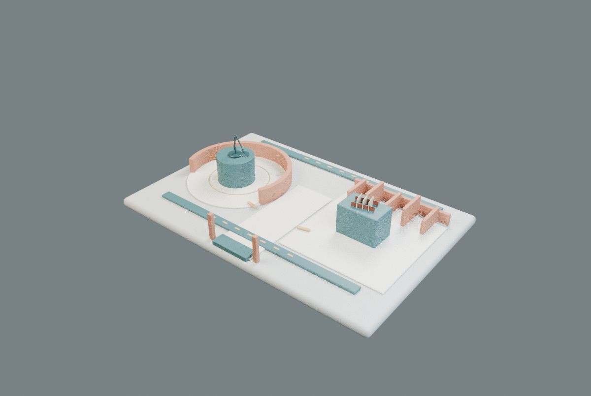

先看不足，再改几何

改前 / Blender CPU白盒初版展台抢过原模型，路径像两条平行道路。修订没有放大原模型，而是将场地宽从4.3m收紧到2.76m，降低展座，并形成入口—中央—两支路。中央共面拼接改为真实单体；后回路绕开墙根/梳齿，不用渲染偏移隐藏错误。
 改后 / 128 samples CPU，主场景离线证据，不含实时界面标记。
改后 / 128 samples CPU，主场景离线证据，不含实时界面标记。新空间设计原型 · 待实时验收
整个视口是可连续探索的小型场所；不是把原来的3D窗口拉满。圆庭、插接廊、中央节点组织对象与导航。文字目录只作为备用。
用户指出旧“空间融合”仍是网页里放一个3D窗口。旧F01–F04保留为历史实验，不计新标准成品。SD01把路径、对象发现和按需内容放入同一个空间；不再靠下方长文章承担主体验。

改前 / Blender CPU白盒初版展台抢过原模型，路径像两条平行道路。修订没有放大原模型，而是将场地宽从4.3m收紧到2.76m，降低展座，并形成入口—中央—两支路。中央共面拼接改为真实单体；后回路绕开墙根/梳齿，不用渲染偏移隐藏错误。
改后 / 128 samples CPU，主场景离线证据，不含实时界面标记。Bruno Simon原作的可读页面明确空间探索、地图、复位和多种输入。采用“位置承载内容+迷路恢复”，不复制车辆、地图、模型或代码。对照后补了键盘查看连接、多指拖动防误选和漫游位置状态。
Lusion：Choo Choo World原工作室页面将其描述为3D/WebGL可玩研究。这里据此提出路径探索实验，不声称已在本机完整玩过。检索日期2026-11-02；文本证据、推断、静态自评与真实GPU体验分开，奖项链接不是可用性证明。
同生成器用Hinge+Slot与Reach+Span两组真实不同几何。Span直接换入旧座，保守底足裕量−31.55mm；展座改为.51×.34m后为+8.45mm。完整形体外包络与底部支撑点不是同一个量，不能混用。源模型scale=1，实例变换与原字节SHA保留。
适用于这些固定姿态、尺度相近的桌面物件与受限俯视空间。更高、更宽、悬挂或动画模型必须重测；两组样本不证明任意模型或全部连续参数可迁移。
GPU主体验、实时闪烁、性能、真实触屏/iPhone仍未验。云浏览器图形支持被禁用，没有修改安全配置。有限静态视觉评审通过不等于用户审美验收。本构筑是微型展示空间，不是可施工人行建筑。